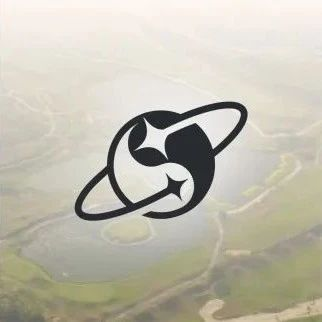

← Back to Archive
投稿｜门头沟交易所爆雷十年后，再看日本加密行业发展
作者: Owen
发布时间: 2024-10-19 03:55:10
日本加密行业的宏观与微观

我刚接触学习比特币的时候,很喜欢看一些跟比特币有关的英文纪录片。Youtube上一部名为《Bitcoin Big Bang: Mark Karpeles》让我印象深刻，今天你依然可搜到这部纪录片。影片主要讲述了一家成立于2010年，最初是以神奇宝贝卡牌的在线交易网站Mt. Gox，外号门头沟 ，在2011年，被法国人马克·卡尔普勒(Mark Karpelès)收购后转型为比特币交易所，随着比特币的普及，Mt. Gox 迅速成为全球最大的比特币交易平台，一度承担比特币全球70%交易量。2014年2月，Mt. Gox 宣布其约85万个比特币（当时价值约为4.73亿美元）被盗并暂停了所有比特币提现。2014年2月28日，Mt. Gox 门头沟交易所申请破产保护。门头沟交易所的迅速兴起与陨落，是我对着日本加密行业最初印象。 不知道是巧合还是命运的安排，今年东京EDCON大会 (Community Ethereum Development Conference)举办地也在门头沟交易所当年所在的东京涉谷区。我怀着好奇，有幸申请过了EDCON大会志愿者，前往东京，实地了解门头沟倒闭十年后，日本现在加密行业发展情况。 日本加密行业的宏观与微观 出发日本前，我在新闻上看到两则近期的日本Web3行业重磅新闻，一个是日本科技巨头索尼收购了Amber Japan的交易所，进入加密交易服务行业。另一个是东京证券交易所的上市公司Metaplanet Inc(证券代码3350:JP)CEO-Simon Gerovich，他说要模仿美股上市公司Microstrategy微策略，发行低息债券，购买并建立比特币本位的上市公司资产储备。看着大“玩家”们进场，让我产生了一种。日本社会似乎经过十年加密行业起落和市场教育，当地民众们对比特币和加密资产已有很高认知和接受度的感觉。 到了东京，我确实发现这边很多线下共享办公空间或酒吧都会带上“Crypto”加密两字。World coin线下Orb虹膜认证网点在东京和大版也很多。我跟朋友们一起拜访了一家位于涉谷区中心地带，名叫“Centrum”加密共享办公空间。它位于商场4楼隐蔽的转角处，你需要找到一个画满壁画的门才能进入这个空间。普通商场购物游客很容易忽略错过它。这像是一种“考验”，只有想跳入加密兔子洞的人，才会找到它。 进空间后，我们发现并没有太多人在办公，十分安静。门店小哥十分热情跟我们介绍，这里在帮World coin做账户真人认证，不过需要在App上提前预约。门店里摆放了不少各个加密货币的宣传单页，线下聚会的信息页。 根据我在东京生活一周左右的经验，我发现加密支付在日本还暂时用不上。因为日本几乎每人都会办张交通卡，比如Suica西瓜卡或Pasmo卡，有了这储值卡可以十分方便乘公交，购物消费。卡里的钱用完了，可以随时走进一家7-11或全家便利店充值。店里的收银系统接入全球主要的银联系统。Web3稳定币加密支付显然无法跟这些传统日本金融巨头们来正面竞争。 再说回东京的EDCON会场给我的观感。一是日本当地人并不关心加密货币，当地人来EDCON现场参观可能只占总人数的20%-30%样子，这还包括了不少来会场薅免费周边的老年人。二是，我没有见到很知名日本Web3项目方来参展。因为这次EDCON会议场地是涉谷区政府免费提供的，所以涉谷区政府也主动推荐过来一些参展项目，比如知名动漫IP，攻壳机动队（Ghost in the shell）参展团队成员坦诚地说，他们是被政府“要求”来参展宣传，项目跟加密Crypto和Web3没啥关系。EDCON大会的亮点是日本加密创投VC们比较活跃。本田圭佑，这位前日本国足明星球员，退役后做了本土创投基金，他作为EDCON大会重磅嘉宾发言，表示希望支持更多日本中小企业和创业者们。日本本土还有2家专业的加密会展机构，IVS（Infinity Ventures Summit）和WebX，他们也会每年在日本举办区块链周活动，同时也跟韩国的加密VC们，比如Hashed有很多联系。 日本DAO组织和加密社交 我在EDCON会场上见到Nouns Japan活跃社群成员们，他们展位都是会场入口处，十分显眼，同时他们也带了大量Merch周边商品，比如墨镜，T恤衫来现场售卖。 除此之外，只有DAO TOKYO，一个以DAO名义举行Web3聚会的组织。去年王超老师撰写的《这些DAO正在改变日本》，让我有些期待能见到更多的日本本土DAO组织，从实际EDCON会场来看，演讲Panel没有单独设置DAO主题讨论交流，也没有太多人在谈论关心DAO。 有人曾告诉我，晚上去居酒屋才能看到日本人真实的一面。我没去居酒屋，但跟朋友们一块去了Arweave/AO在东京Crypto Lounge GOX举办的线下聚会，确实跟EDCON白天会场正经的气氛不一样。一进门就是3台加密老虎机，朋克美学里的霓虹灯色彩映入眼中，墙壁上挂着好几台电脑显示器显示币价行情，充满游乐场&赌场氛围。 我们一群人围坐在投屏下，台上主持人和演讲者正在积极分享关于Arweave/AO最新动态。现场提供免费的小吃，酒水饮料。参会者们被组织玩了一个扫二维码的破冰游戏，整体游戏氛围很好。日本人线下社交不喜欢大声喧哗，喜欢几个人聚拢围坐，靠耳边亲切低声交流，看重隐私性。我曾看过一篇报道说，日本参与加密货币投资的人群中50%-60%来自东京中年男性，从这次聚会现场人群看，我觉得是有一定可信度。 日本特色的加密道路 东京匆匆一行，让我看到了大量行业建设者们正在努力探索日本加密行业的发展方向和路径，这里既有涉谷区政府大力为中小创业企业提供支持，也有活跃本土加密VC们的资金支持，同时也有DMM Group，索尼传统科技巨头跨界探索。各个海外公链，项目方们也十分重视发展日本当地社群，认为日本市场和潜力不容小视，比如Zksync就在EDCON会场上做了大量周边活动和Workshop。 另一方面，我也看到在日本精细高效的社会中，加密货币，虚拟资产想要找到一个能大众普遍接受场景，还为时尚早，有很长路要走。经历过90年代泡沫经济，以及门头沟交易所倒闭的日本人，对于加密资产投机炒作，普遍处于怀疑，观望和保守的态度。 总体上，日本加密行业发展给我一种奇特的感觉，它既不属于投机炒Meme，发空气币的野路子，因为政府对虚拟资产监管很严格。但也不会盲目跟着某些海外公链基金会指挥路线走，它有自己的思考和发展步伐。 2024 年8 月21 日，门头沟交易所破产委员会，通过部分指定加密货币交易平台以BTC 和BCH 形式开始向部分债权人偿还债务。这象征着日本加密行业在之前的崩溃和废墟中，重新振作，继续走日式风格的加密发展道路。 附录：
Youtube视频《Bitcoin Big Bang: l'improbable épopée de Mark Karpeles》
https://www.coindesk.com/business/2024/07/01/sony-buys-ambers-japan-unit-to-enter-the-crypto-market-reports/ Coindesk新闻，索尼收购Amber Group日本的Whalefin交易所
https://www.youtube.com/watch?v=m1T_xKX6Eto
东京上市公司 Metaplanet Inc开始大额买入比特币。
https://metaplanet.jp/
王超《 这些DAO正在改变日本 》